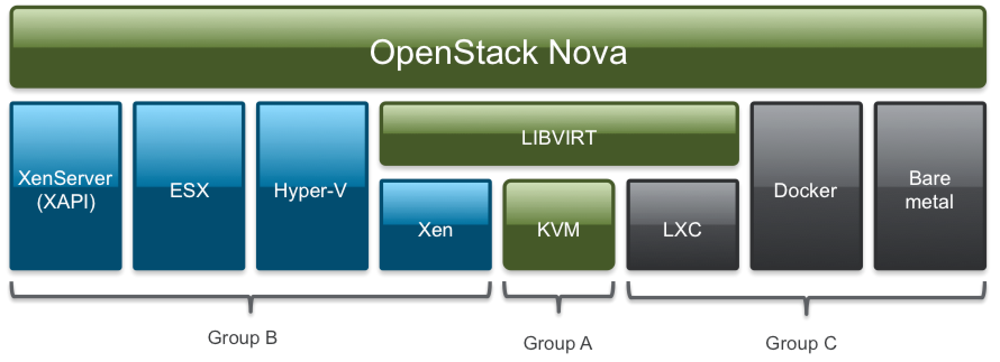

OpenStack
IES Gonzalo Nazareno

Seminario impartido en el CICA. 20 de Mayo de 2016
Theme by: reveal.js
Evolución de la infraestructura
Evolución de la infraestructura
¿Qué es infrastructura?
Procesadores, redes y equipos para almacenamiento de datos
Evolución
- Servidores físicos
- Máquinas virtuales
- Infraestructura en nube
Infraestructura tradicional
- Adquisición de equipos
- Montaje físico
- Conexión a red
- Instalación "manual" y configuración del SO
- Almacenamiento SAN o NAS
- Infraestructua estática
- Se mantienen las configuraciones durante años
- El usuario NO gestiona la infraestructura
Máquinas virtuales
- Varias MVs por cada nodo físico
- MVs gestionadas por el hipervisor
- MVs conectadas a través de redes virtuales
- Sin cambios significativos en almacenamiento
- Gestión similar a los servidores físicos
Infraestructura en nube
- Máquinas virtuales
- Virtualización de redes
- Virtualización del almacenamiento
- Agrupamiento de recursos
- Infraestructura dinámica
- Configuración automática
- El usuario SÍ gestiona su infraestructura
De la nube pública a la privada
The NIST Definition: Características esenciales
- Servicio bajo demanda
- Acceso por red
- Agrupamiento de recursos
- Elasticidad
- Pago por uso
The NIST Definition: Modelos de despliegue
- Nube pública
- Nube privada
- Nube híbrida
The NIST Definition: ... como servicio
- Software as a Service (SaaS)
- Platform as a Service (PaaS)
- Infrastructure as a Service (IaaS)
- Referencia:

¿Por qué una nube privada?
- El software de gestión de nubes se está convirtiendo en un componente clave de los centros de datos
- Las nubes públicas están bien, pero ...
- Privacidad, seguridad, control de los datos
- Vendor lock-in
- Personalización
- ¿Rendimiento?
- ¿Coste?
Infrastructure as a Service
- Nube pública IaaS: AWS, GCE y Azure. ¿Hay espacio para alguien más? ¿es esto lo que queremos?
- Nube privada: Plataformas de software libre
IaaS con software libre
CloudStack
- Inicialmente cloud.com
- Comprado por citrix en 2011
- Donado a la Apache Software Foundation en 2012
- Focalizado en la compatibilidad con AWS
- Ene 2016: Citrix vende CloudPlatform y CloudPortal a Accelerite
- http://cloudstack.apache.org/
Eucalyptus
- El proyecto más antiguo
- Focalizado en la compatibilidad con AWS
- Inicialmente licencia mixta (Open core)
- euca2ools: CLI compatible con AWS (libre)
- Desarrollado principalmente por Eucalyptus Systems
- En Sept. 2014 HP compra Eucalyptus Systems
- http://www8.hp.com/us/en/cloud/helion-eucalyptus-overview.html
OpenNebula
- Data Center Virtualization Software
- Se postula como rival de VMware vCloud
- Compatible con AWS EC2 API
- OpenNebula Marketplace
- http://opennebula.org/
Algunos datos sobre estos proyectos
Charla de Bitergia en el OpenStack Summit:
El proyecto OpenStack
OpenStack

Open source software for creating private and public clouds
Versiones de OpenStack
Desarrollo colaborativo
- Bitergia realiza diferentes análisis sobre el desarrollo de OpenStack
- Kilo: the new OpenStack release
- OpenStack activity dashboard
- OpenStack code contributions dashboard
OpenStack Foundation
- Fundada para promocionar el desarrollo, distribución y adopción de OpenStack
- Abierta a cualquiera
- Individual membership: Community member o Foundation member
- Las empresas participan como Platinum members, Gold members, Corporate Sponsors o Supporting Organizations
OpenStack Foundation. Organización
Principios de OpenStack
- Código disponible bajo la licencia libre Apache 2.0
- Debe soportar todos los hipervisores disponibles
- Uso mediante APIs REST y formato de imagen abierto
- Proceso de diseño abierto:
- Blueprints
- Repositorios públicos (github)
- Compromiso de adoptar estándares abiertos
- Comunidad abierta y transparente OpenStack Community. Welcome Guide
OpenStack Summits
- Se organizan cada 6 meses con miles de participantes:
- The OpenStack Conference
- The OpenStack Design Summit
- Sesiones disponibles
- Próximo summit: Octubre 2016 en Barcelona
¿Por qué OpenStack?
- Porque quiero gestionar el software para IaaS
- Software libre
- Proyecto estable
- Atrae gran cantidad de innovación
- Gran variedad de usos, escenarios y mucha funcionalidad
- Funciona en hardware convencional
Estructura de OpenStack
Integrated release
- Modelo de desarrollo hasta Kilo
- Proyectos oficiales
- Proyectos incubados
- Publicación coordinada: 201X.Y
- Madurez variable de cada componente
- Resto de ecosistema
Big Tent
- "Refactorizing the community"
- Enfoque más inclusivo
- Proyecto OpenStack si encaja en los objetivos y modelo de desarrollo y se pone bajo la supervisión del TC
- OpenStack Project Teams
- Tags
The Big Tent - a look at the new OpenStack projects governance
Servicios de OpenStack
Módulos de OpenStack
Integrados en Kilo
| Name | Function | Name | Function |
|---|---|---|---|
| Nova | Compute | Swift | Object Storage |
| Keystone | Identity | Glance | Image |
| Horizon | Dashboard | Cinder | Block Storage |
| Neutron | Networking | Heat | Orchestration |
| Ceilometer | Telemetry | Ironic | Bare metal |
| Sahara | Hadoop, Spark | Trove | DBaaS |
Nuevos en Big Tent:
| Name | Function | Name | Function |
|---|---|---|---|
| Magnum | Containers | Zaqar | Messaging |
| Barbican | Key Mgmt. | Murano | App Catalog |
| Manila | Shared FS | Designate | DNSaaS |
| ... | ... | ... | ... |
Componentes de OpenStack

Randy Bias - "Vanilla OpenStack" Doesn't Exist and Never Will
Arquitectura de OpenStack
Tecnologías subyacentes
OpenStack trata de ser neutral respecto a las tecnologías subyacentes
Virtualización
Virtualización de redes
- Espacios de nombres de red
- iptables
- Plugins ml2:
- OpenvSwitch
- Nuage
- OpenContrail
- ...
- SR-IOV
- LBaaS, VPNaaS, FWaaS
- IPv6
Virtualización de almacenamiento
Otras consideraciones
- Arquitectura "Leaf/spine"
- Commodity hardware
Casos de uso
Virtualización 2.0
- Gestión ágil y automatizada de máquinas virtuales
- Mediante GUI, CLI o API
- Glance, Nova y Horizon
- El usuario puede gestionar su infraestructura
- Escenarios automáticos mediante plantillas (heat)
- Aplicaciones distribuidas y "nativas" cloud
- Regiones, zonas, agregados, celdas, afinidad/anti-afinidad, ...
Almacenamiento de objetos
- Usado ampliamente para el almacenamiento masivo en Internet
- API extremadamente simple
- Swift o Ceph
- Almacenamiento distribuido, con redundancia y muy escalable
Almacenamiento de bloques
- Equivale a una SAN
- Cinder
Virtualización de redes
- Virtualización completa de la red de un CPD
- SDN
- Software Defined Datacenter
- NFV
- Neutron
Sistemas de ficheros compartidos
Bare metal
- Gestión de servidores físicos
- Ironic
- Instalación y configuración automática de servidores físicos
Big Data
- Sahara
- Hadoop, Hortonworks, Spark, etc.
- Se integran cargas con heat y nova
Contenedores
- Magnum
- Docker, Rocket?
- Kubernetes, Swarm?
- Gestión automatizada de máquinas virtuales o físicas que ejecutan contenedores
HPC?
Administración de OpenStack
- La principal responsabilidad de un administrador de sistemas es mantener las aplicaciones funcionando correctamente y no perder jamás los datos
- Dos perfiles claramente diferentes:
- "Administrador de las aplicaciones en nube": Despliega y mantiene las aplicaciones funcionado sobre infraestructura en nube
- "Administrador de IaaS": Maneja la plataforma de IaaS
Administrador de las aplicaciones en nube
- Común a nube privada o pública
- Conocimiento amplio de los recursos de la nube
- REST APIs
- Orquestación: Cloudformation y Heat
- Gestión y transformación de imágenes
- Ciclo de vida de instancias
- Almacenamiento de objetos
- Almacenamiento de bloques
- Contenedores
- Monitorización, automatización y gestión de la configuración
Administrador de IaaS
- No para juniors ;)
- Conocimiento profundo de las tecnologías subyacentes: virtualización, redes y almacenamiento
- Conocimiento profundo de los componentes del software IaaS
- Monitorización, automatización y gestión de la configuración